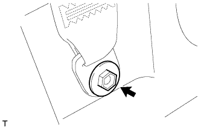
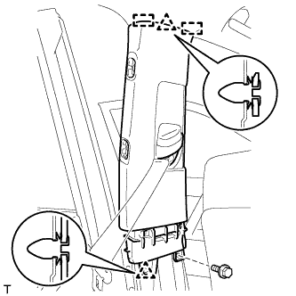
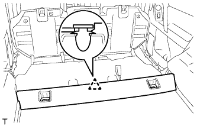
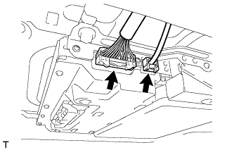
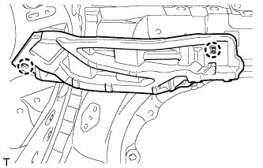

ОБИВКА КРЫШИ (для 5-х дверной модели) > СНЯТИЕ |
| 1. ОТСОЕДИНИТЕ ПРОВОД ОТ ОТРИЦАТЕЛЬНОГО ВЫВОДА АККУМУЛЯТОРНОЙ БАТАРЕИ |
| 2. СНИМИТЕ ЗАДНЕЕ СИДЕНЬЕ № 2 В СБОРЕ (для моделей с задним сиденьем № 2) |
Для сидений с ручным приводом:
Снимите заднее сиденье № 2 в сборе (Нажмите здесь).
Для сидений с электроприводом:
Снимите заднее сиденье № 2 в сборе (Нажмите здесь).
Для моделей с противоположно расположенными сиденьями:
Снимите заднее сиденье № 2 в сборе (Нажмите здесь).
| 3. СНИМИТЕ ЗАДНЕЕ СИДЕНЬЕ № 1 В СБОРЕ (для моделей с задним сиденьем № 1) |
Для выдвижного раздельного сиденья 60/40 с функцией облегчения посадки с левой стороны:
Снимите заднее сиденье № 1 в сборе (Нажмите здесь).
Для выдвижного раздельного сиденья 60/40 с функцией облегчения посадки с правой стороны:
Снимите заднее сиденье № 1 в сборе (Нажмите здесь).
| 4. СНИМИТЕ СПИНКУ ЗАДНЕГО СИДЕНЬЯ № 1 В СБОРЕ (для моделей с задним сиденьем № 1) |
для сидений раздельного типа 60/40 с двойным складыванием с левой стороны:
Снимите спинку заднего сиденья № 1 в сборе (Нажмите здесь).
для сидений раздельного типа 60/40 с двойным складыванием с правой стороны:
Снимите спинку заднего сиденья № 1 в сборе (Нажмите здесь).
| 5. СНИМИТЕ ОПОРНУЮ НАКЛАДКУ ЛЕВОЙ ДВЕРИ В СБОРЕ |
 |
Наклейте защитную ленту вокруг опорной накладки двери.
С помощью отвертки освободите 4 фиксатора, 10 захватов и 2 направляющих и снимите опорную накладку двери.
| *1 | Защитная клейкая лента |
| 6. СНИМИТЕ ОПОРНУЮ НАКЛАДКУ ПРАВОЙ ДВЕРИ В СБОРЕ |
| 7. СНИМИТЕ БОКОВУЮ ОБЛИЦОВОЧНУЮ НАКЛАДКУ С ЛЕВОЙ СТОРОНЫ КОЖУХА |
 |
Снимите фиксатор.
Освободите фиксатор и захват и снимите боковую облицовочную накладку кожуха.
| 8. СНИМИТЕ БОКОВУЮ ОБЛИЦОВОЧНУЮ НАКЛАДКУ С ПРАВОЙ СТОРОНЫ КОЖУХА |
| 9. СНИМИТЕ УПЛОТНИТЕЛЬ ОБШИВКИ ПРОЕМА ЛЕВОЙ ПЕРЕДНЕЙ ДВЕРИ |
 |
Снимите уплотнитель обшивки проема передней двери.
| 10. СНИМИТЕ УПЛОТНИТЕЛЬ ОБШИВКИ ПРОЕМА ПРАВОЙ ПЕРЕДНЕЙ ДВЕРИ |
| 11. СНИМИТЕ ЛЕВУЮ ПЕРЕДНЮЮ ЗАГЛУШКУ ВЕРХНЕГО ПОРУЧНЯ № 1 |
 |
С помощью отвертки освободите 2 захвата и снимите переднюю заглушку верхнего поручня № 1.
| *1 | Защитная клейкая лента |
| 12. СНИМИТЕ ПРАВУЮ ПЕРЕДНЮЮ ЗАГЛУШКУ ВЕРХНЕГО ПОРУЧНЯ № 1 |
| 13. СНИМИТЕ ВЕРХНИЙ ПОРУЧЕНЬ № 1 |
 |
Отверните 2 болта.
Освободите 2 захвата и снимите верхний поручень № 1.
| 14. СНИМИТЕ ОБИВКУ ЛЕВОЙ СТОЙКИ ВЕТРОВОГО СТЕКЛА |
 |
Отсоедините 3 направляющие и снимите обивку стойки ветрового стекла.
 |
Для моделей с подушкой безопасности занавесочного типа:
Защитите подушку безопасности занавесочного типа в сборе.
Полностью укройте подушку безопасности куском ткани или нейлона и закрепите края ткани клейкой лентой, как показано на рисунке.
| *1 | Подушка безопасности занавесочного типа в сборе |
| *2 | Клейкая лента |
| *3 | Защитное покрытие |
| 15. СНИМИТЕ ОБИВКУ ПРАВОЙ СТОЙКИ ВЕТРОВОГО СТЕКЛА |
| 16. СНИМИТЕ ЗАДНЮЮ НАКЛАДКУ ПОРОГА ПОЛА № 1 (для моделей с задним сиденьем № 2) |
 |
С помощью отвертки освободите 2 захвата и снимите заднюю накладку порога пола № 1.
| *1 | Защитная клейкая лента |
| 17. СНИМИТЕ ЛЕВУЮ ЗАДНЮЮ БОКОВУЮ ОПОРНУЮ НАКЛАДКУ (для моделей с задним сиденьем № 2) |
 |
Выверните 2 болта и снимите заднюю боковую опорную накладку.
| 18. СНИМИТЕ ПРАВУЮ ЗАДНЮЮ БОКОВУЮ ОПОРНУЮ НАКЛАДКУ (для моделей с задним сиденьем № 2) |
| 19. СНИМИТЕ ОПОРНУЮ НАКЛАДКУ ЛЕВОЙ ЗАДНЕЙ ДВЕРИ |
 |
Наклейте защитную клейкую ленту вокруг опорной накладки задней двери.
С помощью отвертки освободите 3 фиксатора, 6 захватов и 2 направляющие и снимите опорную накладку задней двери.
| *1 | Защитная клейкая лента |
| 20. СНИМИТЕ ОПОРНУЮ НАКЛАДКУ ПРАВОЙ ЗАДНЕЙ ДВЕРИ |
| 21. СНИМИТЕ УПЛОТНИТЕЛЬ ОБШИВКИ ПРОЕМА ЛЕВОЙ ЗАДНЕЙ ДВЕРИ |
 |
Снимите уплотнитель обшивки проема задней двери.
| 22. СНИМИТЕ УПЛОТНИТЕЛЬ ОБШИВКИ ПРОЕМА ПРАВОЙ ЗАДНЕЙ ДВЕРИ |
| 23. СНИМИТЕ НАКЛАДКУ КРЕПЛЕНИЯ ПОЯСНОГО РЕМНЯ БЕЗОПАСНОСТИ |
 |
Освободите 3 захвата и снимите накладку крепления поясного ремня безопасности.
| 24. СНИМИТЕ НИЖНЮЮ ОБЛИЦОВОЧНУЮ НАКЛАДКУ ЛЕВОЙ СРЕДНЕЙ СТОЙКИ КУЗОВА |
|  |
Выверните болт и отсоедините напольное крепление ремня безопасности переднего сиденья.
 |
Освободите 4 захвата и 2 фиксатора, и снимите нижнюю облицовочную накладку средней стойки кузова.
| 25. СНИМИТЕ НИЖНЮЮ ОБЛИЦОВОЧНУЮ НАКЛАДКУ ПРАВОЙ СРЕДНЕЙ СТОЙКИ КУЗОВА |
| 26. СНИМИТЕ ЛЕВУЮ ЗАГЛУШКУ ВЕРХНЕГО ПОРУЧНЯ № 2 |
 |
С помощью отвертки освободите 2 захвата и снимите переднюю заглушку верхнего поручня № 2.
| *1 | Защитная клейкая лента |
| 27. СНИМИТЕ ЗАГЛУШКУ ПРАВОГО ВЕРХНЕГО ПОРУЧНЯ № 2 |
| 28. СНИМИТЕ ВЕРХНИЙ ПОРУЧЕНЬ № 2 |
 |
Выверните 2 болта.
Освободите 2 захвата и снимите верхний поручень № 2.
| 29. СНИМИТЕ ОБЛИЦОВОЧНУЮ НАКЛАДКУ ЛЕВОЙ СРЕДНЕЙ СТОЙКИ КУЗОВА |
|  |
Переместите регулятор плечевого крепления переднего ремня безопасности в крайнее нижнее положение.
Выверните болт.
Открепите 2 фиксатора и 2 направляющие.
Пропустите напольное крепление ремня безопасности переднего сиденья через облицовочную накладку средней стойки кузова и снимите облицовочную накладку средней стойки кузова.
| 30. СНИМИТЕ ОБЛИЦОВОЧНУЮ НАКЛАДКУ ПРАВОЙ СРЕДНЕЙ СТОЙКИ КУЗОВА |
| 31. СНИМИТЕ ЗАДНЮЮ КРЫШКУ В СБОРЕ (для моделей с задней крышкой) |
Снимите заднюю крышку.
| 32. СНИМИТЕ ПЕРЕДНЮЮ ОБЛИЦОВОЧНУЮ НАКЛАДКУ БАГАЖНОГО ОТДЕЛЕНИЯ (для моделей без заднего сиденья № 2) |
 |
Освободите 4 захвата и снимите накладку.
 |
Выверните болт и снимите защелку ремня для удержания багажа и переднюю облицовочную накладку багажного отделения.
| *1 | Защелка ремня для удержания багажа |
| 33. СНИМИТЕ ПАНЕЛЬ ПОЛКИ БАГАЖНОГО ОТДЕЛЕНИЯ № 1 В СБОРЕ (для моделей без заднего сиденья № 2) |
|  |
Освободите фиксатор и снимите панель полки багажного отделения № 1.
| 34. СНИМИТЕ ЗАДНЮЮ ОПОРНУЮ ПАНЕЛЬ КОВРИКА ЗАДНЕГО ПОЛА (для моделей без заднего сиденья № 2) |
 |
Освободите 5 фиксаторов и 4 захвата и снимите заднюю опорную пластину коврика заднего пола.
| 35. СНИМИТЕ ЛЕВУЮ БОКОВУЮ НАПРАВЛЯЮЩУЮ ПОЛА БАГАЖНОГО ОТДЕЛЕНИЯ (для моделей с направляющей полки багажного отделения) |
 |
Выверните 3 болта и снимите боковую направляющую пола.
| 36. СНИМИТЕ ПРАВУЮ БОКОВУЮ НАПРАВЛЯЮЩУЮ ПОЛА БАГАЖНОГО ОТДЕЛЕНИЯ (для моделей с направляющей полки багажного отделения) |
| 37. СНИМИТЕ ЗАДНИЙ НАПОЛЬНЫЙ КОВРИК В СБОРЕ (для моделей без заднего сиденья № 2) |
Освободите 4 захвата и снимите задний напольный коврик.

| *A | для моделей без направляющей полки багажного отделения | *B | для моделей с направляющей полки багажного отделения |
| *C | Для сидений с противоположным расположением | - | - |
| 38. СНИМИТЕ НАКЛАДКУ КРЕПЛЕНИЯ ПОЯСНОГО РЕМНЯ БЕЗОПАСНОСТИ ЗАДНЕГО СИДЕНЬЯ № 1 |
 |
Освободите 3 захвата и снимите накладку крепления поясного ремня безопасности заднего сиденья № 1.
| 39. СНИМИТЕ ЗАЩЕЛКУ ОБЛИЦОВКИ БАГАЖНОГО ОТДЕЛЕНИЯ № 1 |
 |
Снимите защелку облицовочной панели багажного отделения, повернув ее по часовой стрелке.
| 40. СНИМИТЕ КОЛПАЧОК КРЕПЛЕНИЯ ЗАДНЕЙ КРЫШКИ № 1 (для моделей без задней крышки) |
 |
С помощью отвертки отцепите 2 захвата и снимите колпачок крепления задней крышки № 1.
| *1 | Защитная клейкая лента |
| 41. СНИМИТЕ ПЕРЕДНЮЮ БОКОВУЮ ОБЛИЦОВОЧНУЮ НАКЛАДКУ БАГАЖНОГО ОТДЕЛЕНИЯ (для моделей с задней крышкой) |
 |
С помощью отвертки освободите 2 захвата и снимите переднюю боковую облицовочную накладку полки багажного отделения.
| *1 | Защитная клейкая лента |
| 42. СНИМИТЕ ЗАГЛУШКУ ВЕРХНЕГО ПОРУЧНЯ (для моделей с задним сиденьем № 2) |
 |
С помощью отвертки освободите 2 захвата и снимите заглушку верхнего поручня.
| *1 | Защитная клейкая лента |
| 43. СНИМИТЕ ВЕРХНИЙ ПОРУЧЕНЬ В СБОРЕ (для моделей с задним сиденьем № 2) |
 |
Выверните 2 болта и снимите верхний поручень.
| 44. СНИМИТЕ ЛЕВУЮ БОКОВУЮ ОБЛИЦОВОЧНУЮ ПАНЕЛЬ ПОЛКИ БАГАЖНОГО ОТДЕЛЕНИЯ В СБОРЕ |
Для моделей без заднего сиденья № 2:
 |
Выверните болт и отсоедините напольное крепление ремня безопасности заднего сиденья № 1.
 |
Освободите 6 захватов и 2 направляющих и отсоедините опору рычага фиксации спинки заднего сиденья.
Выверните 4 болта и 2 винта.
Ослабьте 5 зажимов и 8 фиксаторов.
Пропустите опору рычага фиксации спинки заднего сиденья через боковую облицовочную панель полки багажного отделения и снимите боковую облицовочную панель полки багажного отделения.

Для моделей с задним сиденьем № 2:
|
Выверните болт и отсоедините напольное крепление ремня безопасности заднего сиденья № 1.
 |
Выверните болт и отсоедините напольное крепление ремня безопасности заднего сиденья № 2.
Выверните 2 болта и 2 винта.
Освободите 4 фиксатора и 8 захватов и снимите боковую облицовочную панель полки багажного отделения.
| 45. СНИМИТЕ ПРАВУЮ БОКОВУЮ ОБЛИЦОВОЧНУЮ ПАНЕЛЬ ПОЛКИ БАГАЖНОГО ОТДЕЛЕНИЯ В СБОРЕ |
Для моделей без заднего сиденья № 2:
 |
Выверните болт и отсоедините напольное крепление ремня безопасности заднего сиденья № 1.
Освободите 6 захватов и 2 направляющих и отсоедините опору рычага фиксации спинки заднего сиденья.
Выверните 4 болта и винты.
Ослабьте 5 фиксаторов и 8 захватов.
Отсоедините все разъемы.
Пропустите опору рычага фиксации спинки заднего сиденья через боковую облицовочную панель полки багажного отделения и снимите боковую облицовочную панель полки багажного отделения.
Для моделей с задним сиденьем № 2:
|
Выверните болт и отсоедините напольное крепление ремня безопасности заднего сиденья № 1.
 |
Выверните болт и отсоедините напольное крепление ремня безопасности заднего сиденья № 2.
Выверните 2 болта и винт.
Ослабьте 4 фиксатора и 8 захватов.
Отсоедините все разъемы и снимите боковую облицовочную панель полки багажного отделения.
| 46. СНИМИТЕ ЛЕВУЮ НАРУЖНУЮ ПЕРЕДНЮЮ ОБЛИЦОВОЧНУЮ ПАНЕЛЬ В СБОРЕ |
 |
Переместите регулятор плечевого крепления заднего ремня безопасности в крайнее нижнее положение.
Открепите 2 фиксатора и 2 направляющие.
Пропустите напольное крепление ремня безопасности заднего сиденья № 1 через переднюю боковую облицовочную панель и снимите переднюю боковую облицовочную панель.
| 47. СНИМИТЕ ПРАВУЮ НАРУЖНУЮ ПЕРЕДНЮЮ ОБЛИЦОВОЧНУЮ ПАНЕЛЬ В СБОРЕ |
| 48. СНИМИТЕ ЛЕВУЮ ЗАДНЮЮ БОКОВУЮ ОБЛИЦОВОЧНУЮ ПАНЕЛЬ В СБОРЕ |
Для моделей без заднего сиденья № 2:
Освободите 7 фиксаторов и 2 направляющих и снимите заднюю боковую облицовочную панель.
 |
Для моделей с задним сиденьем № 2:
Открепите 7 фиксаторов и 2 направляющие.
 |
Освободите 4 фиксатора и 2 направляющие, пропустите напольное крепление ремня безопасности заднего сиденья № 2 через заднюю боковую облицовочную панель и снимите заднюю боковую облицовочную панель.
| 49. СНИМИТЕ ПРАВУЮ ЗАДНЮЮ БОКОВУЮ ОБЛИЦОВОЧНУЮ ПАНЕЛЬ В СБОРЕ |
| 50. СНИМИТЕ ВЕРХНИЙ ПОРУЧЕНЬ В СБОРЕ |
 |
С помощью отвертки расцепите 4 захвата и снимите 2 крышки верхних поручней.
| *1 | Защитная клейкая лента |
Отцепите 2 фиксатора и снимите верхний поручень.
Снимите 2 фиксатора с кузова автомобиля.
| 51. СНИМИТЕ ЗАДНИЙ ЛЕВЫЙ ВЕРХНИЙ ПОРУЧЕНЬ |
 |
С помощью отвертки расцепите 4 захвата и снимите 2 крышки верхних поручней.
| *1 | Защитная клейкая лента |
Отцепите 2 фиксатора и снимите верхний поручень.
Снимите 2 фиксатора с кузова автомобиля.
| 52. СНИМИТЕ ЗАДНИЙ ПРАВЫЙ ВЕРХНИЙ ПОРУЧЕНЬ |
| 53. СНИМИТЕ ВЕРХНИЙ ПОРУЧЕНЬ (для моделей с задним сиденьем № 2) |
 |
С помощью отвертки освободите 4 захвата и откройте 2 крышки.
| *1 | Защитная клейкая лента |
Выверните 2 болта и снимите верхний поручень.
| 54. СНИМИТЕ КРЫШКУ КРОНШТЕЙНА ЛЕВОГО ПРОТИВОСОЛНЕЧНОГО КОЗЫРЬКА |
 |
Освободите 4 захвата и снимите крышку кронштейна противосолнечного козырька.
| 55. СНИМИТЕ КРЫШКУ КРОНШТЕЙНА ПРАВОГО ПРОТИВОСОЛНЕЧНОГО КОЗЫРЬКА |
| 56. СНИМИТЕ ЛЕВЫЙ ПРОТИВОСОЛНЕЧНЫЙ КОЗЫРЕК В СБОРЕ |
 |
Выверните 2 винта и снимите козырек.
| 57. СНИМИТЕ ПРАВЫЙ ПРОТИВОСОЛНЕЧНЫЙ КОЗЫРЕК В СБОРЕ |
| 58. СНИМИТЕ ДЕРЖАТЕЛЬ ПРОТИВОСОЛНЕЧНОГО КОЗЫРЬКА |
 |
Поверните держатель козырька примерно на 45° и вытяните его, как показано на рисунке.
Расцепите 2 захвата и снимите держатель противосолнечного козырька.
| 59. СНИМИТЕ ЛАМПУ ИНДИВИДУАЛЬНОГО ОСВЕЩЕНИЯ |
Освободите 4 фиксатора.
Отсоедините разъем и снимите лампу индивидуального освещения.
| 60. СНИМИТЕ КРЫШКУ ДАТЧИКА ДОЖДЯ (для моделей с датчиком дождя) |
Расцепите 2 захвата и снимите крышку датчика дождя.
| 61. СНИМИТЕ КРЫШКУ ДЕРЖАТЕЛЯ СТОЙКИ ВНУТРЕННЕГО ЗЕРКАЛА ЗАДНЕГО ВИДА (для моделей с зеркалом с электрохромным покрытием) |
 |
Отсоедините 2 захвата и сдвиньте крышку держателя стойки внутреннего зеркала заднего вида в направлении, указанном на рисунке стрелкой.
 |
Освободите 2 захвата и снимите крышку держателя стойки внутреннего зеркала заднего вида.
| 62. СНИМИТЕ ЛАМПУ ОСВЕЩЕНИЯ САЛОНА № 1 В СБОРЕ |
Снимите лампу освещения салона № 1 (Нажмите здесь).
| 63. СНИМИТЕ ЛАМПУ ОСВЕЩЕНИЯ САЛОНА № 2 В СБОРЕ |
Снимите лампу освещения салона № 2 (Нажмите здесь).
| 64. СНИМИТЕ ОСНОВАНИЕ ТЕЛЕВИЗИОННОГО ДИСПЛЕЯ (для моделей с развлекательно-информационной системой для задних пассажиров) |
С помощью съемника молдингов освободите 6 захватов и 4 фиксатора и снимите основание телевизионного дисплея.
| 65. СНИМИТЕ ОБИВКУ КРЫШИ В СБОРЕ |
Для моделей с зеркалом с электрохромным покрытием:
Отсоедините разъем внутреннего зеркала.
 |
Для моделей с датчиком дождя:
Отсоедините разъем датчика дождя
 |
Для моделей с люком:
Отсоедините разъем приводного механизма.
 |
Отсоедините 2 разъема и 3 зажима от левой стойки ветрового стекла.
 |
Выверните болт.
Отсоедините 2 разъема и 3 зажима от правой стойки ветрового стекла.
 |
Отсоедините 2 разъема и зажим от левой задней стойки.
Отсоедините разъем и 3 зажима от правой задней стойки.
|  |
Для моделей с развлекательно-информационной системой для задних пассажиров:
Отсоедините 2 разъема.
 |
Для моделей без люка:
Освободите 2 фиксатора.
 |
Для моделей с люком:
Освободите 2 фиксатора, 2 направляющие и 8 креплений.
| *1 | Направляющая |
| *2 | Фиксатор |
Для моделей с развлекательно-информационной системой для задних пассажиров:
Освободите 2 фиксатора, 2 направляющих и 6 креплений.
| *1 | Направляющая |
| *2 | Фиксатор |
Снимите обивку крыши с двери багажного отделения, как показано на рисунке.
| 66. СНИМИТЕ НАКЛАДКУ ПЛЕЧЕВОГО КРЕПЛЕНИЯ ЛЕВОГО ПЕРЕДНЕГО РЕМНЯ БЕЗОПАСНОСТИ В СБОРЕ |
 |
Освободите 5 захватов пластины плечевого крепления переднего ремня безопасности и сдвиньте пластину плечевого крепления переднего ремня безопасности в направлении стрелки, чтобы снять ее.
| 67. СНИМИТЕ НАКЛАДКУ ПЛЕЧЕВОГО КРЕПЛЕНИЯ ПРАВОГО ПЕРЕДНЕГО РЕМНЯ БЕЗОПАСНОСТИ В СБОРЕ |
| 68. СНИМИТЕ НАКЛАДКУ ПЛЕЧЕВОГО КРЕПЛЕНИЯ ЛЕВОГО ЗАДНЕГО РЕМНЯ БЕЗОПАСНОСТИ В СБОРЕ |
Освободите 6 захватов пластины плечевого крепления заднего ремня безопасности и сдвиньте пластину плечевого крепления заднего ремня безопасности в направлении стрелки, чтобы снять ее.
| 69. СНИМИТЕ НАКЛАДКУ ПЛЕЧЕВОГО КРЕПЛЕНИЯ ПРАВОГО ЗАДНЕГО РЕМНЯ БЕЗОПАСНОСТИ В СБОРЕ |
| 70. СНИМИТЕ ОБЛИЦОВКУ ЛЕВОГО БОКОВОГО БРУСА КРЫШИ № 1 |
Освободите 3 фиксатора.
Срежьте 3 фиксатора и снимите облицовку бокового бруса крыши.
| *a | Место среза |
Снимите 3 фиксатора с кузова автомобиля.
| 71. СНИМИТЕ ОБЛИЦОВКУ ПРАВОГО БОКОВОГО БРУСА КРЫШИ № 1 |
| 72. СНИМИТЕ КРЫШКУ ЛЕВОЙ БОКОВОЙ ВНУТРЕННЕЙ ОБЛИЦОВКИ КРЫШИ (для моделей без заднего сиденья № 2) |
Освободите 4 захвата и 2 направляющих и снимите крышку боковой внутренней облицовки крыши.
| 73. СНИМИТЕ КРЫШКУ ПРАВОЙ БОКОВОЙ ВНУТРЕННЕЙ ОБЛИЦОВКИ КРЫШИ (для моделей без заднего сиденья № 2) |
| 74. СНИМИТЕ КРЮК ПЛЕЧЕВОГО КРЕПЛЕНИЯ РЕМНЯ БЕЗОПАСНОСТИ ЛЕВОГО ЗАДНЕГО СИДЕНЬЯ |
 |
Освободите захват и направляющую и снимите крюк плечевого крепления ремня безопасности заднего сиденья.
| 75. СНИМИТЕ КРЮК ПЛЕЧЕВОГО КРЕПЛЕНИЯ РЕМНЯ БЕЗОПАСНОСТИ ПРАВОГО ЗАДНЕГО СИДЕНЬЯ |
| 76. СНИМИТЕ БОКОВУЮ ОБЛИЦОВОЧНУЮ НАКЛАДКУ В ЗАДНЕЙ ЧАСТИ КУЗОВА |
Отцепите 2 захвата и снимите боковую облицовочную накладку.
| 77. СНИМИТЕ КРЫШКУ ГНЕЗДА В ЗАДНЕЙ БОКОВОЙ ОБЛИЦОВОЧНОЙ ПАНЕЛИ |
 |
Освободите 3 захвата и 2 направляющие и снимите крышку гнезда в задней боковой облицовочной панели.
| 78. СНИМИТЕ ЛЕВУЮ БОКОВУЮ ОБЛИЦОВОЧНУЮ НАКЛАДКУ ПОЛКИ БАГАЖНОГО ОТДЕЛЕНИЯ |
 |
Освободите 3 захвата и 2 направляющие и снимите боковую облицовочную накладку полки багажного отделения.
| 79. СНИМИТЕ ЗАДНЮЮ РАСПОРНУЮ ДЕТАЛЬ ЛЕВОГО БОКОВОГО БРУСА (для моделей без подушки безопасности занавесочного типа) |
Освободите 2 захвата и снимите заднюю распорную деталь бокового бруса.
| 80. СНИМИТЕ ЗАДНЮЮ РАСПОРНУЮ ДЕТАЛЬ ПРАВОГО БОКОВОГО БРУСА (для моделей без подушки безопасности занавесочного типа) |
| 81. СНИМИТЕ ЗАДНЮЮ РАСПОРНУЮ ДЕТАЛЬ ЛЕВОГО БОКОВОГО БРУСА № 2 (для моделей без подушки безопасности занавесочного типа) |
Освободите 2 захвата и снимите заднюю распорную деталь бокового бруса № 2.
| 82. СНИМИТЕ ЗАДНЮЮ РАСПОРНУЮ ДЕТАЛЬ ПРАВОГО БОКОВОГО БРУСА № 2 (для моделей без подушки безопасности занавесочного типа) |
| 83. СНИМИТЕ ЗАДНЮЮ РАСПОРНУЮ ДЕТАЛЬ ЛЕВОГО БОКОВОГО БРУСА № 3 |
|  |
Освободите 2 захвата и снимите заднюю распорную деталь бокового бруса № 3.
| 84. СНИМИТЕ ЗАДНЮЮ РАСПОРНУЮ ДЕТАЛЬ ПРАВОГО БОКОВОГО БРУСА № 3 |